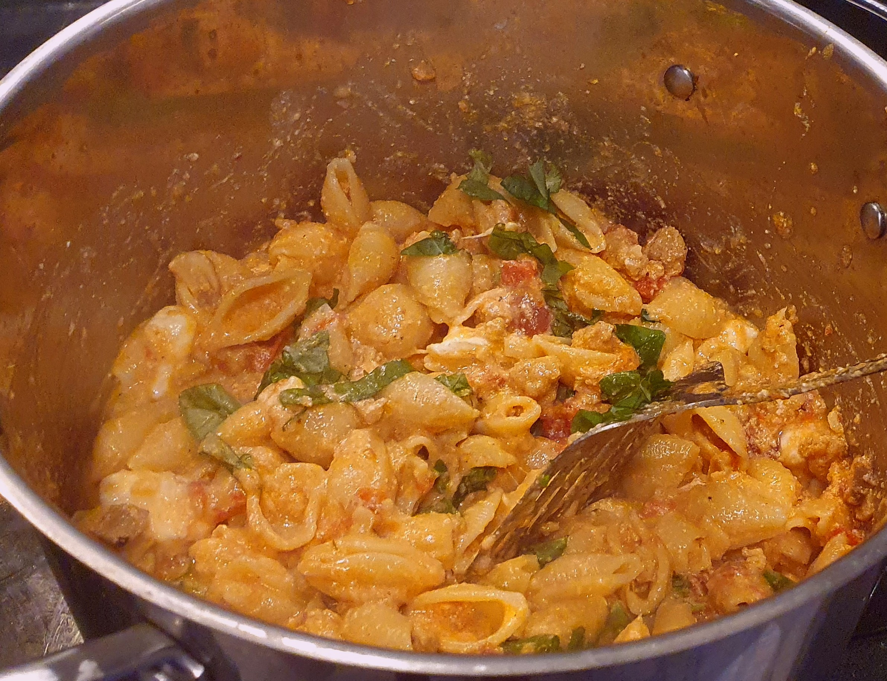

Recipes Home
Spicy Sausage Pasta

Description
This recipe was inspired by Kitchenswagger's Sausage Stuffed Shells Recipe.
My version uses any regular spicy sausage and whatever pasta shape you have in your kitchen (personally shells or rigatoni are a favourite!).
This is a go to easy meal for me, and I find it a nice alternative sometimes to a spag bol. I hope you like it as much as I do!
I tend to use a 500g pack of pasta for this. For us it makes approx 5 portions.
Ingredients
- 500g pasta
- 1 pack spicy sausages (approx 8)
- 1 medium onion (chopped)
- 2 cans cherry tomatoes
- 2 minced garlic cloves
- 1 teaspoon tomato concentrate
- 1/2 tbsp chilli flakes
- 1/2 tbsp basil
- 1/2 tbsp oregano
- 1/2 tbsp parsley
- 250g mascarpone cheese
- 1 ball of mozzarella
- 1 tbsp olive oil
- Salt and pepper to taste
- Sprinkle of parmesan cheese (for the top)
- Handful of fresh basil leaves
Instructions
- Chop onion and mince garlic
- Remove sausage skin (optional) and break into small pieces
- Boil water for pasta
- Fry onions in olive oil until browned and softened
- Add garlic and fry for 15-20 seconds
- Once water has boiled, add to the pot, season with course salt, bring back up to the boil and add pasta
- Add cherry tomatoes, crushing them to make a sauce
- Add tomato concentrate and spices
- Cook sauce until pasta is almost fully cooked, add mascarpone at this point
- To finish up sauce add mozzarella and basil
- Once pasta is al dente, drain and add back into pot, mix with sauce
- Serve with a sprinkle of grated parmesan on top